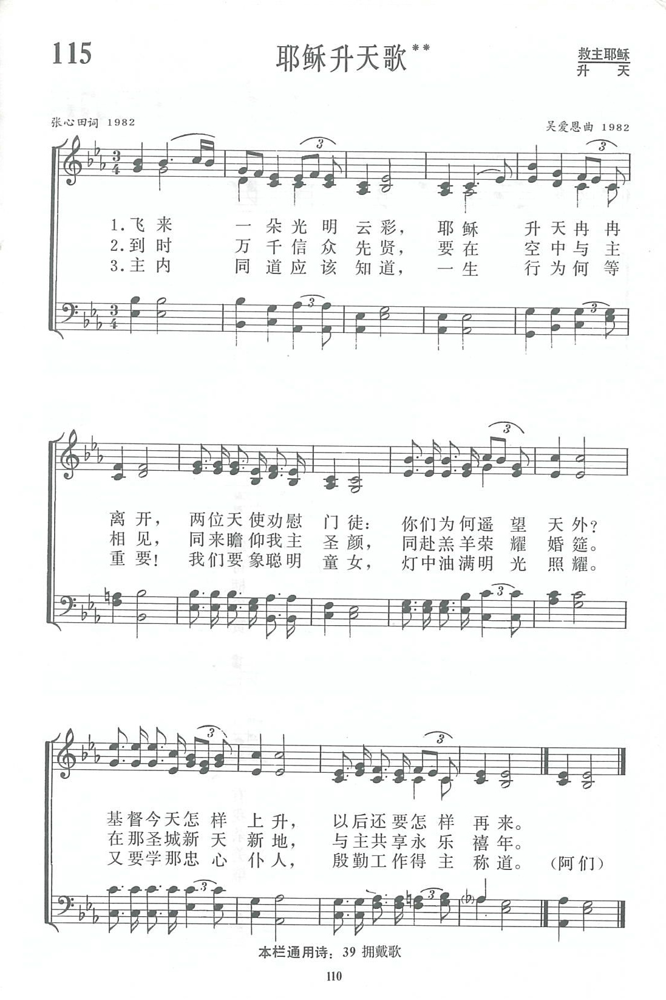

|
|
|
|
|
飞来一朵光明云彩，耶稣升天冉冉离开，
|
|
https://www.zanmeishige.com/tab/13788.html?songbook=1&index=115
 |
|
|
|
|

https://youtu.be/h6ezmwjs7iA
第115首 耶稣升天歌** _张心田 Behold, there came a cloud so bright
经文：“他就被取上升，有一朵云彩把他接去，便看不见他了”(徒1：9)。
《耶稣升天歌》是张心田牧师为《新编》所写的一首新诗。
张心田是上海嘉定县人，生于1911年，1939年毕业于南京金陵神学院乡村教会科，1945年按立为牧师，前后14年在乡村教会工作，曾任中华基督教会申禾区会乡村教会识字运动干事，四川美以美会龙泉驿乡村实验区主任，上海郊区大团中华基督教会传道、牧师等职。1952一1958年，他在上海广学会(以后合并到基督教联合书局)任编辑；1981年复堂后任上海虹口区景灵堂的主任牧师，1991年退休。他善于写比较通俗的诗文，所著《乡村教会讲章》、《基督教简易读本》等书在我国乡村教会相当流行。
这首《耶稣升天歌》不仅描写耶稣升天的情景，还联系到耶稣再来，信徒“在空中与主相见，……同赴羔羊荣耀婚筵”的盼望。
诗的重点在第三节，即要信徒作聪明的童女、忠心的仆人，在世殷勤作工，才能得主的称赞。
他在原稿上写下腓立比书第2章，5至16节这段经文：“你们显在这世代中，好像明光照耀(按：圈点是作者所加),生命的道表明出来。”可见张牧师的立意之所在。
曲作者是吴爱恩，她是一位朝鲜族女牧师，生于1926年9月，其家庭从祖父开始便信基督教。1944年她从奉天第四高等女子学校毕业后，曾任小学教员数年，以后在沈阳市北市教会担任义工，1954年进北京燕京协和神学院本科学习，1957年毕业后在沈阳市朝鲜族教会内工作迄今。“文化大革命”后，她与吕志彬同工一起于1981年受牧师圣职，是八十年代我国第一批被按立的女牧师。她现在是沈阳西塔教会的主任牧师，还负责朝鲜族义工圣经培训等重要事工；她也是中国基督教协会副会长。
朝鲜族素以能歌善舞著称。赞美诗编辑部的同工知道吴爱恩爱好音乐，有美丽的女高音歌喉，又会弹钢琴，便想请她谱写一首朝鲜民族风格的赞美诗。她当时一方面为中国教会要出版新的赞美诗而高兴，另一方面因自己从未谱过曲，也有思想负担。经过祷告，神给了她亮光。她说：“我觉得新中国的教会符合神的旨意，是神所喜欢的。别国信徒可以写赞美诗，我们自己就不能作词作曲歌颂神吗?”她的思想豁然开朗了。
1982年她去北京参加全国性基督教会议时，看到了张心田的这首诗稿：“飞来一朵光明云彩，耶稣升天冉冉离开”，她立刻被这两句词吸引住了。她不仅想到主耶稣经过十字架的痛苦，复活后升到高天之上，还联想到“我国教会过去曾经蒙受洋教的羞辱，神兴起三自运动也正像飞来一朵光明云彩”。回到沈阳以后，她与唱诗班同道们一起揣摩，写出了这个富有朝鲜族风味的曲调。吴牧师非常谦逊，曾建议以“西塔教会唱诗班集体创作”署名，后来经编辑部同工劝说，才同意写上她的名字。
https://www.xueshengshi.com/?p=6390
耶穌升天 維基百科[編輯]
{kind=link}
| 耶穌 |
|---|
 |
|
耶穌升天（英語：Ascension of Jesus，英語化自《聖經》拉丁語《武加大譯本》的《使徒行傳》第1章第9-11節，章節標題：Ascensio Iesu）是《新約》中關於耶穌復活40天後，在他的十一個門徒面前，復活的身體被舉揚升天的基督教教義。在聖經的描述中，一個天使告訴在場的使徒們耶穌會以同樣的方式再臨。[1]
聖經正典四福音書中，在《路加福音》第24章第50-53節和《馬可福音》第16章第19節包含了兩處關於耶穌升天的描述。更詳細的耶穌身體被升上雲端的描述則包含在《使徒行傳》中。
基督徒們在《尼西亞信經》和《使徒信經》中宣認了基督的升天。升天暗示了基督的人性被天國所接受。[2] 復活節40天後的耶穌升天節（星期四），是基督徒一年中的主要節日之一。[2]這一節日被廣泛地證實至少可追溯至4世紀晚期。[2]耶穌升天是福音描述的基督生平的五大轉折，其他四個為耶穌受洗、榮顯聖容、耶穌受難和耶穌復活。[3][4]
耶穌升天圖的圖像學意義在6世紀確立，9世紀開始，耶穌升天圖開始被繪製在教堂的穹頂上。[5][6]很多升天圖分為兩部分，上部（天堂）和下部（人間）。[7]升天的基督通常向地上的人群伸出右手給予祝福，並顯示他在保佑整個教會。[8]
參考文獻[編輯]
- ^ "Ascension, The." Macmillan Dictionary of the Bible. London: Collins, 2002. Credo Reference. Web. 27 September 2010. ISBN 0-333-64805-6
- ^ 2.0 2.1 2.2 "Ascension of Christ." Cross, F. L., ed. The Oxford dictionary of the Christian church. New York: Oxford University Press. 2005 ISBN 0-19-280290-9
- ^ Essays in New Testament interpretation by Charles Francis Digby Moule 1982 ISBN 0-521-23783-1 page 63
- ^ The Melody of Faith: Theology in an Orthodox Key by Vigen Guroian 2010 ISBN 0-8028-6496-1 page 28
- ^ Festival icons for the Christian year by John Baggley 2000 ISBN 0-264-67487-1 page 137–138
- ^ Encyclopedia of World Religions by Johannes P. Schade 2007, ISBN 1-60136-000-2 entry under Ascension
- ^ Renaissance art: a topical dictionary by Irene Earls 1987 ISBN 0-313-24658-0 pages 26–27
- ^ The meaning of icons by Leonide Ouspensky, Vladimir Lossky 1999 ISBN 0-913836-77-X page 197
參見[編輯]
{kind=link}
https://zh.wikipedia.org/wiki/%E8%80%B6%E7%A9%8C%E5%8D%87%E5%A4%A9
耶穌基督升天的意義和重要性是什麼？
耶穌從死裡復活後，他“顯明自己是活著的”（使徒行傳 1:3 ），顯示給墳墓附近的婦女（馬太福音 28:9-10 ），以及他的使徒們（路加福音 24:36-43 ），還有其他五百多人（哥林多前書 15:6）。 在他復活後的幾天裡，耶穌對他的門徒們講說神國的事。
復活四十天后，耶穌和他的使徒們來到耶路撒冷附近的橄欖山。 耶穌在那裡向追隨者們應許他們很快會迎接聖靈，他還教導他們留在耶路撒冷直到聖靈到來。 然後耶穌祝福他們，在祝福的時候，他開始升天。 耶穌升天的敘述可見於路加福音 24:50-51 和使徒行傳 1:9-11.
從經書中可以顯然看出耶穌升天是實實在在的、有形地回歸到天堂。 人們可以看見他逐漸從地面升起，在許多專注的旁人注視中升起。 當使徒們竭力最後看耶穌一眼時，一朵雲彩把他接去，便看不見他了，兩個天使出現，許諾了基督的回歸“你們見他怎樣往天上去，他還要怎樣來” （使徒行傳 1:11 ） 。
耶穌升天之所以意義重大是因為以下幾個原因： 1) 它暗示著他的塵世事奉結束。 父神在伯利恆慈愛地將他的兒子派到世上，現在神子要回到父那裡去。 他局限為人的時期結束了。
2) 它意味著他在地做工成功。 所有他來要做的，都完成了。
3) 它標誌著他的天上榮耀的回歸。 耶穌的榮耀在世上的時候被遮蓋了，只是在門徒面前短暫地顯現過（馬太福音 17:1-9 ）。
4) 它像徵著是天父叫他上天（以弗所書 1:20-23 ） 。 這是天父所喜悅的愛子（馬太福音 17:5 ） ，神將他升為至高，又賜給他那超乎萬名之上的名（腓立比書 2:9 ）。
5) 它令耶穌可以為我們預備地方（約翰福音 14:2 ）。
6) 它表明耶穌作為大祭司（希伯來書 4:14-16 ）和新約的中保（希伯來書 9:15 ）的新工作開始
7) 它確定了耶穌回歸的模式。 當耶穌來建立王國時，他怎麼走的還會怎麼回來 — 實實在在的、有形地、被大家看到在那雲彩裡（使徒行傳 1:11 ；但以理書 7:13-14 ；馬太福音 24:30 ；啟示錄 1:7 ）
現在，主耶穌在天國。 經文常常描繪他在天父的右手，這是尊貴和權威的位置（詩篇 110:1 ；以弗所書 1:20 ；希伯來書 8:1 ） 。 基督是教會全體之首（歌羅西書 1:18 ），靈命恩賜的賦予者（以弗所書4:7-8 ），和充滿萬有的萬能者（以弗所書 4:9-10 ）。 基督升天這一事件使耶穌從塵世事奉轉向了天國事奉。
https://www.gotquestions.org/T-Chinese/T-Chinese-Jesus-ascension.html